One of the specialisms of a mechanical engineer is the design of moving systems. A drive system takes the power from a drive source (a motor, an engine or a person turning a handle) and delivers it to an output at the right speed, the right torque, in the right direction and in the right form of motion. At Higher you also need to know how the parts of a drive system are joined (couplings), supported (bearings), connected and disconnected (clutches) and stopped (brakes), and to calculate the torque and power that a drive system transmits.
Section 1: What You Should Already Know
Gears are toothed wheels that transmit rotary motion and power from one shaft to another. When two gears mesh, the gear connected to the drive source is the driver and the gear connected to the output is the driven gear. Meshed gears always rotate in opposite directions. A small driver turning a large driven gear reduces the speed; a large driver turning a small driven gear increases it.
Both of these equations are in the data booklet. The velocity ratio (VR) compares the input and output speeds. A VR greater than 1 means the output is slower than the input; a VR less than 1 means it is faster.
For gears and chain sprockets the “size” is the number of teeth; for belt pulleys it is the diameter. So for a pair of gears, VR = teeth on driventeeth on driver, and for a belt drive, VR = diameter of driven pulleydiameter of driver pulley.
| Drive | Velocity ratio | Direction of output | Remember |
|---|---|---|---|
| Simple gear train | teeth on driventeeth on driver | opposite to the driver | Practical gears have about 8 to 100 teeth, so one pair gives a VR of at most about 12.5 |
| With an idler gear | unchanged by the idler | same as the driver | The idler only changes direction, so it is usually the smallest gear available |
| Compound gear train | VR1 × VR2 × … | reverses at each mesh | Two gears on the same shaft turn at the same speed; very large VRs fit in a small space |
| Worm and wheel | teeth on the wheel (single-start worm) | output at 90° to the input | Large VR in one stage; usually cannot be driven backwards |
| Belt drive | driven diameterdriver diameter | same (opposite if the belt is crossed) | Can slip; quiet; no lubrication |
| Chain drive | teeth on driventeeth on driver | same as the driver | Cannot slip; needs lubrication and tensioning |
In a compound gear train, two gears are fixed to the same intermediate shaft, so they turn at the same speed. Gear A drives B; C is on the same shaft as B, and C drives D. The overall VR is the product of the VRs of each pair.
Section 2: Diagrams and Selecting Drive Systems
Representing gear systems
Gear systems are hard to draw in 3D by hand, so engineers use simple 2D conventions. The most common in the exam is the plan view (looking from above or from the side of the shafts). Each shaft is drawn horizontally with its centre line along it, and each gear is a shaded rectangle across its shaft: the height of the rectangle is the diameter of the gear and its width is the thickness. Meshing gears touch. Gears that share a shaft turn at the same speed.
The British Standard drawing method shows each gear as its pitch circle (the circle where the teeth of the two gears meet), with the tips of the teeth as a thin outer circle and chain-dotted centre lines. Pitch circles of meshing gears touch.
Belt drives in more detail
Belts can carry power over a large distance between shafts, and they are quieter and cheaper than gears or chains. Because a plain belt grips the pulleys only by friction, it can slip. That is a disadvantage when the timing matters, but an advantage when a machine jams: the belt slips instead of the motor stalling or parts breaking.
- Flat belt — rectangular section. Simple and cheap, and it will slip if the load becomes too large, protecting the machine. However, it slips more easily under heavy loads because the contact area with the pulley is small.
- V-belt — runs in a V-shaped groove. As the load increases the belt wedges further into the groove, increasing the grip, so more power can be transmitted with less slip. Often several V-belts run side by side.
- Toothed (timing) belt — has teeth that mesh with teeth on the pulleys, so it cannot slip. Used where shafts must stay exactly in step, such as the camshaft drive in a car engine, while keeping the quietness of a belt.
Chain drives in more detail
A chain drive uses toothed sprockets and a roller chain, as on a bicycle. Because the chain meshes with the teeth it cannot slip, and it can transmit large forces over a large distance. The VR is found in the same way as for a gear pair, but the sprockets turn in the same direction.
Choosing a drive system
| Drive | Advantages | Disadvantages | Typical use |
|---|---|---|---|
| Gear train | Compact; no slip; can transmit high power; precise speed ratio | Noisy; needs lubrication; shafts must be close together; reverses direction at each mesh | Gearboxes, machine tools, clocks |
| Chain drive | No slip; large power; shafts can be far apart; driver and driven turn the same way | Needs lubrication and correct tension; noisy if slack; does not slip in a fault, so other parts can be damaged; hard to reverse direction | Bicycles, motorcycles, conveyors |
| Belt drive | Quiet; no lubrication; cheap; slips if overloaded, protecting the machine; can be crossed to reverse direction | Can slip and lose power; belts stretch and wear, so they must be tensioned and replaced | Pillar drills, lathes, washing machines, fans |
| Worm and wheel | Very large VR in one stage and a small space; output at 90°; self-locking | Low efficiency because the worm slides on the wheel; worm and wheel wear | Hoists, winches, guitar tuning pegs, gates |
Section 3: Converting Rotary Motion to Linear Motion
Many drive systems must turn the rotary motion of a motor into linear motion: a stairlift climbing a staircase, a car’s steering moving the front wheels, a vice closing. The Higher course includes two ways of doing this, the rack and pinion and the worm and nut. Because the output is linear, there is no velocity ratio; instead you calculate how far the output moves for each turn of the input.
Rack and pinion
The pinion is a round gear. Instead of meshing with a second round gear, it meshes with a rack: a straight bar with teeth of the same shape. As the pinion turns, the rack moves in a straight line (or, if the rack is fixed, the pinion travels along it, as in a stairlift or a rack railway). Each tooth that passes moves the rack by one pitch — the distance between the same point on neighbouring teeth.
Sometimes the rack is described by the number of teeth per metre. Then:
Worm and nut
A worm and nut (also called a lead screw and nut) is a screw thread with a nut on it. The nut is stopped from turning, so when the worm is rotated the nut travels along it. For a single-start thread the nut moves one pitch for every full turn of the worm. Because the pitch is small, the movement is slow and precise and the force produced is large — and, like a worm and wheel, the nut cannot drive the worm backwards, so it holds its position.
Worm and nut drives are used where a relatively short, accurate linear movement is needed: vices, screw jacks, machine-tool slides, 3D-printer axes and the steering boxes of many vehicles. Longer movements are better suited to a rack and pinion.
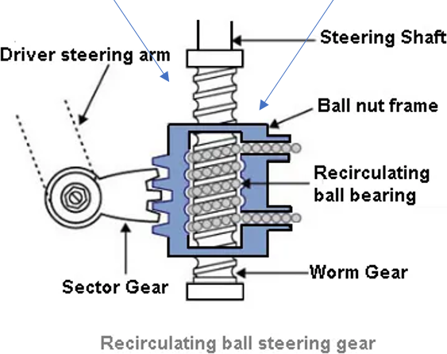
Worm and wheel — a reminder
A worm and wheel keeps the motion rotary but turns it through 90°. Each full turn of a single-start worm moves the wheel on by one tooth, so the VR equals the number of teeth on the wheel: a 40-tooth wheel gives a VR of 40. The wheel cannot drive the worm, which is why worm drives are used as a fail-safe in hoists, cranes and lifts, and why a guitar string stays in tune.
Section 4: Torque
Torque is the turning effect of a force about an axis — the rotary version of a moment. A force applied further from the axis produces a bigger turning effect: it is much easier to open a door by pushing at the handle than close to the hinges. In a drive system, torque is what makes shafts, gears, pulleys and drums turn.
T is the torque in newton metres (Nm), F is the force in newtons and r is the radius (the perpendicular distance from the axis) in metres. Two traps appear in almost every torque question:
- Drums and pulleys are often given as a diameter. Halve it to find the radius, and convert mm to m.
- A load is often given as a mass. Convert it to a force (its weight) using F = mg, with g = 9.8 ms-2.
How a gear train changes torque
A gear train that reduces the speed increases the torque by the same factor (and one that increases speed reduces torque). The power going in and out must be the same, apart from losses — you will see why in Section 5 — so if the speed is divided by the VR, the torque is multiplied by it. This is why a car uses a low gear (a high VR) to pull away or climb a hill, and why a small motor with a large-VR gearbox can turn a heavy winch drum.
Section 5: Mechanical Power
At Higher we are interested in how much power a drive system transmits — how quickly it does work. You already know that power = energytime and that the work done by a force is Ew = Fd. In a rotating system, the force acts at the edge of a drum or gear and moves round a circle.
- In one turn, the force moves a distance equal to the circumference, 2πr.
- If the shaft makes n turns every second, the force moves 2πrn metres every second.
- Work done per second = force × distance per second = F × 2πrn. That is the power.
- Rearranging, P = 2πn × (F × r), and since T = Fr:
P is the power in watts, T the torque in Nm, and n the rotational speed in revolutions per second. Speeds are often given in rev min-1, so divide by 60 first. The data booklet also gives P = Fv, which is the same idea for linear motion: the speed of a cable leaving a drum is v = 2πrn = πdn, and Fv gives the same power as 2πnT. This is a good way to check an answer.
Try it: drive-train calculator
A motor drives a winch drum through up to three gear pairs. Change any value and every result is recalculated, with the working shown. Use it to check your answers — but show your own working in the tasks.
Section 6: Couplings
Rotary machines transmit motion through shafts (round metal rods), and shafts often have to be joined together: a motor to a pump, a gearbox to a propeller shaft, an engine to a generator. Shafts are joined using a coupling. In school models a simple plastic sleeve, gripping by friction, is enough; industrial machines need much stronger couplings. The purposes of a coupling are to:
- connect two shafts end to end so that power, torque and motion are transmitted from one to the other;
- allow parts that are made separately, such as a motor and a pump, to be joined, and disconnected for repair or replacement;
- allow for small misalignment between the shafts (flexible couplings);
- reduce the transfer of shock loads and vibration from one shaft to the other (flexible couplings).
Rigid couplings — for aligned shafts
When the two shafts are exactly in line and will stay that way, a rigid coupling can be used. It has no movement within itself, so it transmits power very reliably and efficiently. Rigid couplings must be keyed to the shafts: a groove (keyway) is cut in both the shaft and the coupling, and a rectangular metal key fits into both, so the coupling cannot slip round the shaft. A coupling that transmits power without slipping is said to give a positive drive.
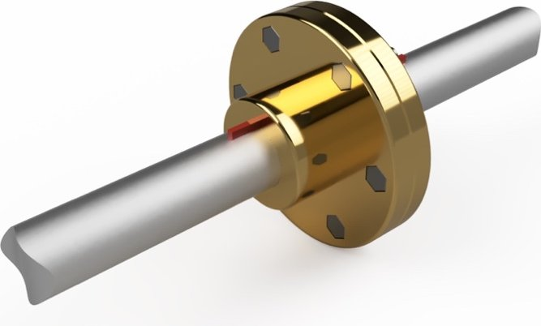
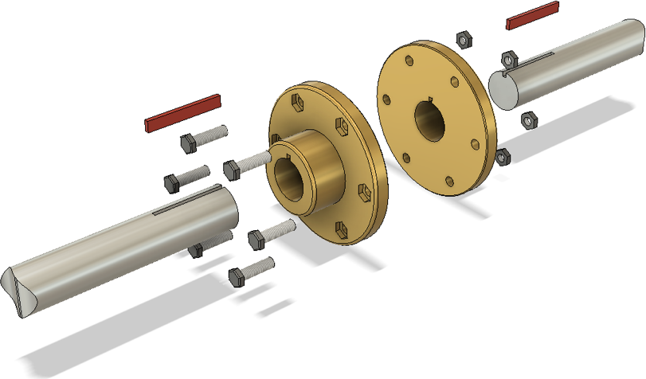
- Flange coupling — a flange (disc) is keyed to the end of each shaft and the two flanges are bolted together.
- Sleeve (muff) coupling — a sleeve fits over both shaft ends and is keyed or bolted to them. A split sleeve comes in two halves bolted together, so it can be removed without moving the shafts apart.
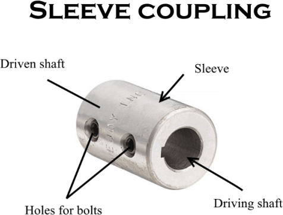
Rigid couplings suit medium to heavy loads where the shafts can be accurately aligned, such as large turbine generators, and machines where the timing of the output must be exact. If the shafts are even slightly out of line, a rigid coupling forces them to bend as they turn, which loads and wears the bearings.
Flexible couplings — for misaligned shafts
It is not always possible to align shafts perfectly, and some machines need a degree of flexibility to work properly. Flexible couplings fix to each shaft in a similar way (clamped or keyed) but the two shafts do not need to share exactly the same axis.
- Flexi-coupling — similar to a flange coupling, but with a rubber (or rubber and steel) element between the two halves. The rubber can be squashed, so it compensates for small angles and small movements along the shaft, and it absorbs vibration, shock loads from hard starts, and thermal expansion of the shafts.
- Flexible sleeve coupling — a slotted or rubber sleeve that bends slightly. Used where little power or torque is transmitted.
- Universal joint (Hooke’s joint) — used when the shafts are more than a few degrees out of line. Each shaft ends in a yoke, and the two yokes pivot on a cross-shaped spider, usually on needle-roller bearings. In cars they typically work at up to about 15–20°, and specialist joints allow more. They are used in propeller shafts, drive shafts and steering columns.
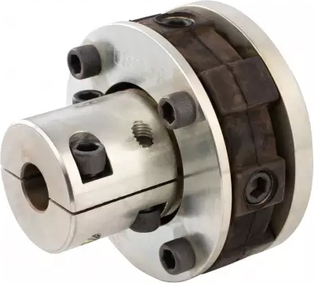
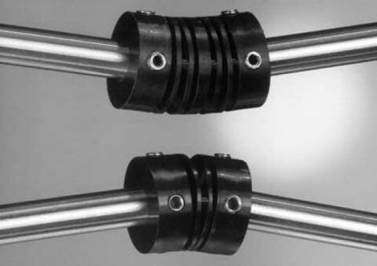
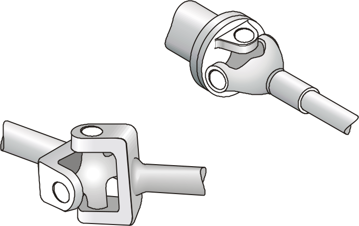
| Coupling | Shafts | Main advantages | Example |
|---|---|---|---|
| Flange / sleeve (rigid) | perfectly aligned | positive drive; very efficient; transmits high torque | turbine to generator |
| Flexi-coupling | slightly misaligned (a few degrees) | absorbs vibration and shock loads; allows small misalignment and thermal expansion; reduces noise and protects bearings | motor to pump |
| Flexible sleeve | slightly misaligned | cheap and simple for low torque | small motor to a fan or encoder |
| Universal joint | at a larger angle, which may change | transmits drive through angles up to about 20° | vehicle propeller shaft, steering column |
Section 7: Friction and Bearings
As you saw in the Energy and Efficiency notes, no system is 100% efficient. In mechanical systems the main cause of losses is friction between surfaces that rub against each other. Friction is useful in some parts of a drive system — brakes and clutches depend on it (Section 8) — but almost everywhere else it must be reduced, because it causes:
- heat — parts expand, distort or seize; lubricants break down; in extreme cases there is a fire risk;
- wear — parts wear out sooner, so more maintenance and replacement parts are needed;
- energy loss — energy is wasted as heat and sound, so the system is less efficient and costs more to run;
- noise — rubbing surfaces squeal and vibrate.
Friction is reduced in two ways: lubrication with oil or grease, which keeps the surfaces apart, and fitting bearings.
What bearings do
When shafts rotate they need to be supported. If a motor with a long shaft has a gear on the end, the weight of the gear can bend the shaft, so the gear no longer meshes properly and the shaft and motor may be damaged. Supporting the other end of the shaft with a bearing stops it bending. A bearing supports a shaft and locates it in position while allowing it to rotate with as little friction as possible. Bearings are designed to wear, so that when they eventually wear out, only the bearing is replaced rather than the shaft or the machine.
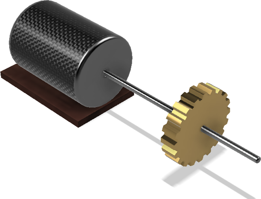
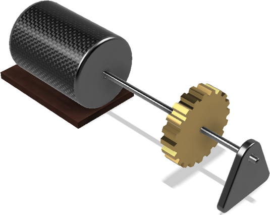
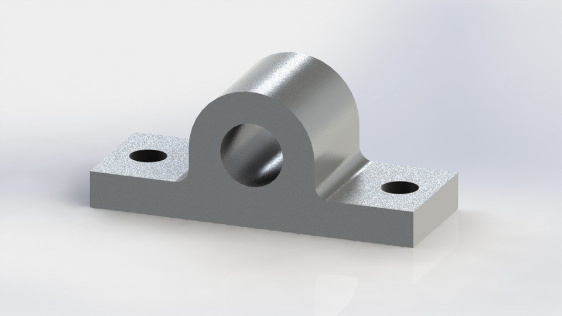
Radial and axial loads
The type of bearing needed depends on the direction of the load it must support:
- a radial load acts at 90° to the shaft — for example the weight of a car pressing down on its wheel bearings, or the weight of a gear on a shaft;
- an axial (thrust) load acts along the shaft — for example the push of a propeller or fan, the weight of a person sitting on a swivel chair, or the sideways force on a wheel when a car turns a corner.
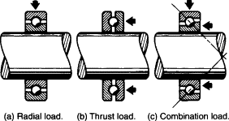
Types of bearing
Plain bearings (bushes or bushings) are the simplest type: a sleeve of soft, low-friction material between the shaft and the housing, with no moving parts. The shaft slides on the bearing surface. They are cheap, need little maintenance, and their large contact area lets them carry large radial loads, but sliding produces more friction than rolling. Common materials are bronze (slow, heavy loads), white metal (an alloy of tin, copper and antimony, for light loads; it melts if overheated rather than damaging the shaft) and nylon or other plastics.
Journal bearings support a radial load on a rotating shaft (the part of a shaft inside a bearing is called the journal). In an oil-fed journal bearing, oil is pumped in to keep a thin film between the shaft and the bearing, so the shaft is suspended on the oil rather than touching the bearing. This gives very low wear, long life and good cooling, so journal bearings are used for continuous running at high load in turbines, pumps and engine crankshafts.
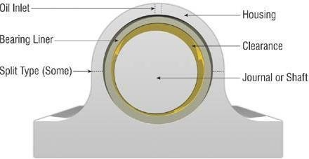
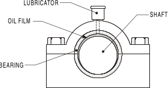
Ball and roller bearings replace sliding with rolling. Hardened steel balls or rollers, held evenly spaced by a cage (separator), roll between an inner race fixed to the shaft and an outer race fixed in the housing. The rolling contact gives much lower friction than sliding, but the bearings must still be lubricated, usually with grease, to stop heat building up.
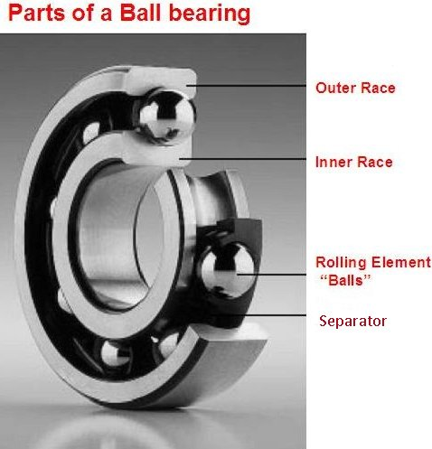
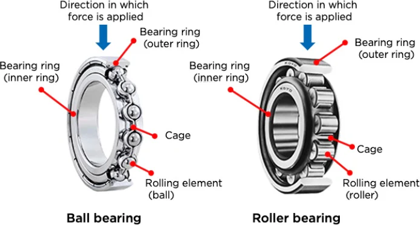
- Ball bearings — small contact area, so low friction at high speed, but limited load. Used for light loads at high speeds: drills, electric motors, skateboard wheels.
- Roller bearings — cylindrical rollers have a line of contact rather than a point, so they carry much heavier radial loads at lower speeds. Tapered roller bearings have angled rollers and can carry a radial and an axial load together, as in vehicle wheel hubs and wind turbine main shafts.
Thrust bearings are designed to carry an axial load. The balls or rollers sit between two flat washers (races) so that the load along the shaft is taken by rolling elements. A thrust bearing is needed whenever a shaft carries a large axial load: swivel chairs, turntables, propeller shafts, vertical shafts that carry a weight.
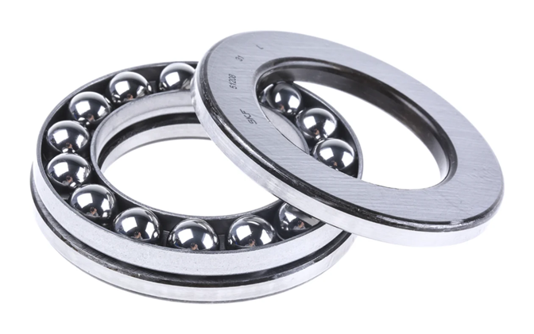
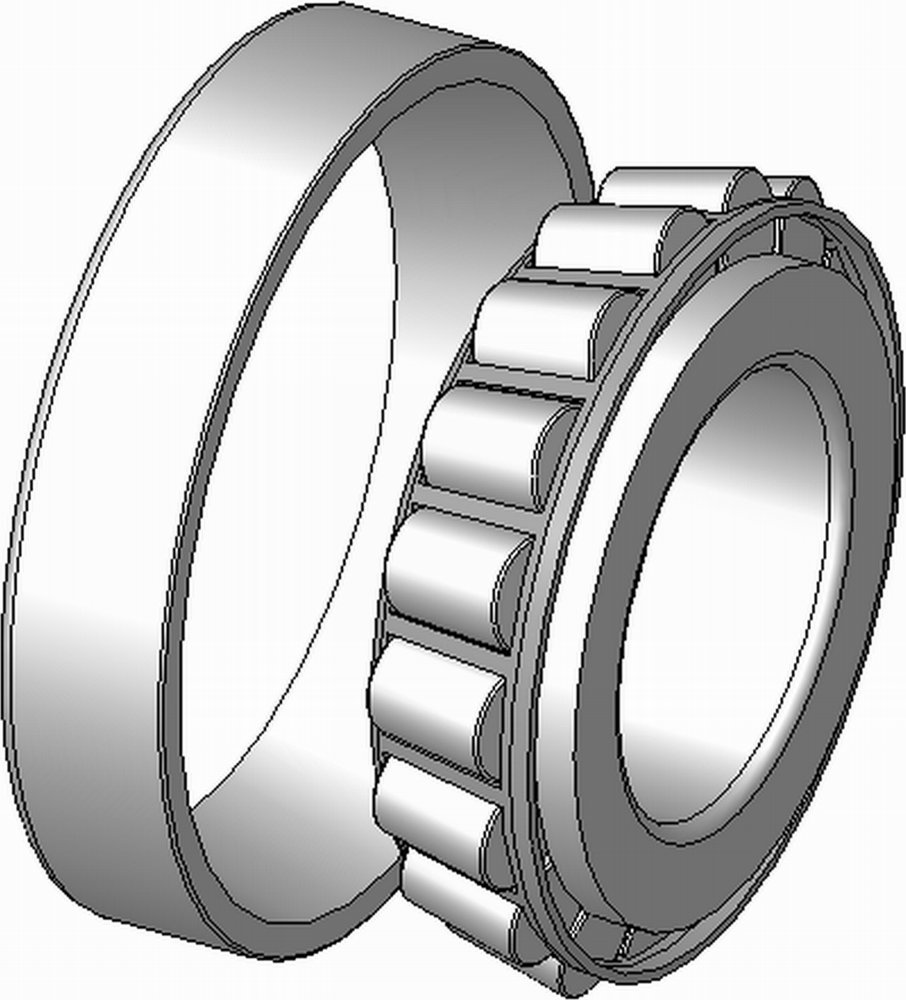
Split bearings come in two halves (top and bottom shells) inside a housing that bolts together. A bearing at the end of a shaft is easy to slide off and replace, but a long shaft, such as a ship’s propeller shaft or a conveyor line shaft, is supported at several points along its length. A split bearing can be taken apart and its shells replaced without removing the shaft, reducing downtime and cost. The shells have an oil groove to lubricate the shaft.
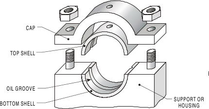
| Bearing | Load | Notes | Example |
|---|---|---|---|
| Plain (bush) | radial (large); slow or light duty | simple, cheap, little maintenance; sliding friction | rotary washing line, hinges, small machines |
| Journal (oil film) | radial | shaft runs on a film of oil; very low wear; continuous running | turbines, pumps, crankshafts |
| Ball | mainly radial; some axial | low friction at high speed; light to medium loads | drills, electric motors, skateboards |
| Roller (tapered roller) | heavy radial (radial and axial if tapered) | larger contact area; heavy loads at lower speeds | vehicle wheel hubs, agricultural machinery, wind turbines |
| Thrust | axial | designed for loads along the shaft | swivel chairs, propeller shafts, turntables |
| Split | radial | can be replaced without removing the shaft | long line shafts, ship propeller shafts |
Section 8: Brakes and Clutches
Brakes and clutches are the two parts of a drive system where friction is essential. Both are designed with high-friction materials that wear away in use, so they need checking and replacing regularly.
Brakes
Energy cannot be created or destroyed, only transferred or transformed. A moving system has kinetic energy, and when the drive is removed friction in the system slowly turns that energy into heat and sound. Because drive systems are designed to be efficient, this would take a long time. A brake uses a high-friction material to turn the kinetic energy into heat much more quickly, slowing or stopping the system.
In a disc brake, a disc (rotor) is fixed to the wheel or shaft. A caliper straddles the disc; when the brake is applied, hydraulic pistons in the caliper push high-friction pads against both faces of the disc. The disc gets very hot, so discs often have holes or internal vents to help them cool and to save weight. In a drum brake, curved shoes are pushed outwards against the inside of a drum that turns with the wheel.
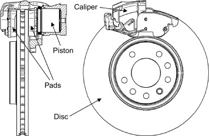
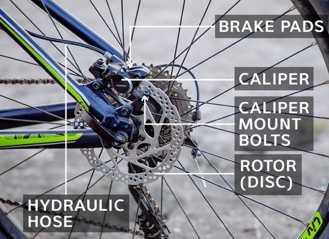
Pads, shoes and discs wear away and are damaged by the heat, so they must be replaced routinely. Many electric and hybrid vehicles also use regenerative braking: the motor works as a generator, turning some of the kinetic energy back into electrical energy instead of wasting it all as heat.
Clutches
A clutch allows two rotating shafts to be connected and disconnected while the drive source keeps running. In a car, pressing the clutch pedal disconnects the engine from the gearbox, so the driver can change gear without damaging it, and can stop the car without stopping the engine. Clutches are also used where a motor must be running at speed before the load is connected. There are two main types.
Dog clutches (positive clutches) have interlocking blocks, called dogs, on the end of each shaft. When the clutch is engaged the dogs lock together and the drive cannot slip; when it is disengaged the shafts are pulled apart. The shafts must be carefully aligned, and they must be stationary, or turning very slowly at the same speed, when the dogs are brought together. Dog clutches work well where high torque must be transmitted with no slip.
Friction clutches can be engaged and disengaged while both shafts are turning. A plate faced with high-friction material is pressed between the driving surface (the engine flywheel in a car) and a pressure plate by strong springs. Friction transmits the torque. As the plates come together they slip at first, so the driven shaft speeds up smoothly. Multi-plate clutches use several plates to transmit more torque in a smaller space.
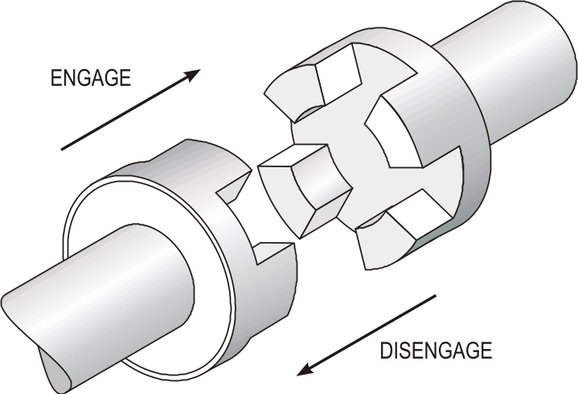
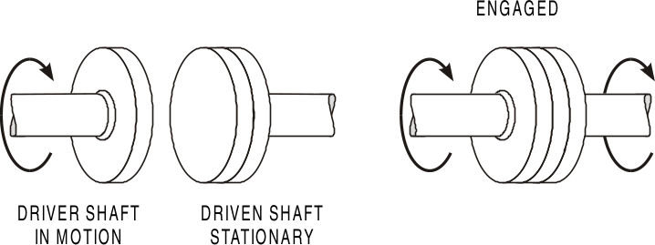
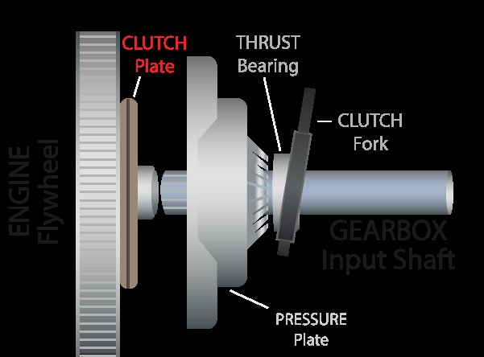
Because a friction clutch can slip, it can also be used as a safety device. In an electric drill or screwdriver, a slip clutch connects the motor to the chuck; if the bit jams, the clutch plates slip instead of the motor stalling or the user’s wrist being twisted. The disadvantages of clutches are extra complexity, cost and maintenance, wear of the friction material, and wasted energy (as heat) whenever they slip.
| Feature | Friction clutch | Dog clutch |
|---|---|---|
| Connection | friction between surfaces | interlocking teeth (dogs) |
| Slip | yes — gives smooth engagement and overload protection | no — positive lock |
| Engagement | smooth and gradual, while the shafts are turning | abrupt; shafts must be stopped or at the same speed |
| Efficiency | lower when slipping (heat produced) | higher (no slip) |
| Wear | friction material wears and must be replaced | little wear on the dogs |
| Use | cars, drills, machinery that starts under load | racing gearboxes, high-torque drives, some machine tools |
Section 9: Exam-Style Questions
These questions are written in the style of the Higher question paper, with original contexts. Try each one under timed conditions (about 1.5 minutes per mark), then check against the model answers. Give final answers to 2 significant figures with a unit.
Question 1 — Ferry linkspan winch
The ramp at a Hebridean ferry terminal is raised by a winch. A 7.5 kW motor running at 1460 rev min-1 drives the winch drum through a compound gearbox: gear A (15T) on the motor meshes with B (75T); C (12T) is on the same shaft as B and meshes with D (60T), which drives the drum. The drum has a diameter of 0.80 m. The gearbox is 88% efficient.
Question 2 — Tidal stream turbine
A tidal stream turbine in the Pentland Firth has a rotor that turns at 14 rev min-1, producing a torque of 820 kNm on the main shaft. A gearbox increases the speed to drive a generator at 1050 rev min-1. The fast-moving tide also pushes the rotor along the line of its shaft.
Question 3 — Tenement stairlift
A stairlift is being fitted in a Glasgow tenement. A motor running at 1400 rev min-1 drives a pinion through a worm and 40-tooth wheel. The 20-tooth pinion climbs a rack fixed to the stairs, which has 125 teeth per metre. The force needed to move the seat and user up the rack is 1450 N.
Question 4 — Workshop pillar drill
A pillar drill motor runs at 1400 rev min-1. A V-belt connects a 60 mm pulley on the motor to a 140 mm pulley on the drill spindle. The motor delivers 450 W and the belt drive is 96% efficient.
Question 5 — Hydro scheme sluice gate
A sluice gate at a Highland hydro-electric dam is raised by a worm and nut. A motor running at 960 rev min-1 drives the worm through a gear pair with a VR of 8. The worm has a single-start thread with a pitch of 12 mm. The gate weighs 18 kN and must be raised by 1.5 m.
Section 10: Design Challenges
Each challenge is an open-ended engineering problem like those in the Higher assignment. There is no single right answer: analyse the problem, design a solution with calculations, decide how you would test it, and evaluate it against the specification. State every assumption you make. You can build and test your drive in the NoGrind simulator.
Challenge 1 — Lifeboat slipway winch
A lifeboat station on the Moray Firth needs a new winch to haul its boat back up the slipway after a launch.
| i | The cable pull needed is 9.0 kN, at a cable speed of about 0.25 ms-1. |
|---|---|
| ii | The winch drum has a diameter of 0.40 m. |
| iii | The electric motor runs at 1450 rev min-1. |
| iv | Gears must have between 8 and 100 teeth. |
| v | The boat must not run back down the slipway if the power fails. |
Challenge 2 — Orkney community wind turbine
An Orkney community group is specifying the drive train for a 250 kW wind turbine. The rotor turns slowly; the generator needs a high speed.
| i | Rotor speed 30 rev min-1, delivering 250 kW to the main shaft. |
|---|---|
| ii | Generator speed 1500 rev min-1. |
| iii | Gears must have between 8 and 100 teeth. |
| iv | The turbine must be able to be stopped and held for maintenance. |
| v | The rotor shaft carries the weight of the rotor and is pushed along its axis by the wind. |
Challenge 3 — Festival stage lift
An Edinburgh festival venue wants a lift to raise performers through a trapdoor in the stage. Two drives are being considered: a rack and pinion, and a pair of worm-and-nut lead screws.
| i | The platform must rise 1.8 m in 20 s. |
|---|---|
| ii | The total load to be lifted is 6.0 kN. |
| iii | The platform must hold its position safely at any height. |
| iv | It must be quiet during performances. |